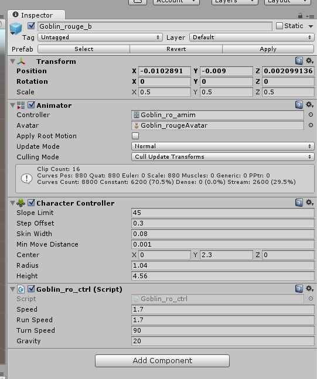
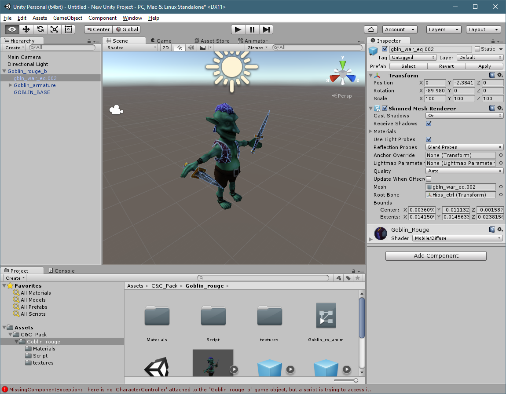

In previous tutorials, we had to deal with the Transform Position (so the block sits right in the world), and the box collider.
An animated character has more Components in order for everything to work well. We'll review them here. Each model you work with will have different names, and ordering to them as they appear in the hierarchy.
With the goblin_rouge_b prefab selected, we'll look at the Inspector

We have our Transform, as always, but we also have some new components called Animator, Character Controller, and a Script. We don't need a Character Controller, or a Script component to add the game, and they may even give us errors. Click on the Gear Cog by each component, and Remove Component.
Under the Hierarchy, click on the second part of the prefab, the "gbln_war_eq.002", and look at the Inspector.

On this object, you can see in the Scene window that its swords, jacket, and hair are all highlighted. This tells us that that this layer just involves those items. We have our transform, and our Skinned Mesh Renderer. The Mesh Rendered is what applies the mesh for the highlighted objects.
In the Hierarchy, click on the Goblin_armature. If you expand the selection, you'll see there's just 'empty' game objects. These are the Goblin's joints and body parts. We typically don't need to make any changes to them.
Back in the Hierarchy, click on the GOBLIN_BASE. You'll notice it has a Skinned Mesh Rendered, and it covers up nearly every aspect of the Goblin. It doesn't inclulde his hair, or his weapons, but that's fine. Since this game object is the one that covers the object the most, it's where we'll want to place our Mesh Collider later.
Created with the Personal Edition of HelpNDoc: Single source CHM, PDF, DOC and HTML Help creation